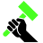
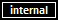

|  | Welcome to Neon |
Neon/neonKUBE is an open source project released under the MIT license. This project includes several class general purpose libraries published as nuget packages (known as the Neon libraries) as well as a nacent Kubernetes distribution called neonKUBE which is still very much a work in progress.
The central theme behind these projects is to fill in some gaps developers encounter when developing scalable services intended to be hosted on public cloud providers such as AWS, Azure, and Google Cloud, or hosted within in private datacenters.
We'll touch on the components below. Visit the table of contents to to locate more details.
All Neon and neonKUBE packages and utilities are available under the MIT Open Source License. |
Neon and neonKUBE .NET libraries are available as packages on nuget.org. All packages are currently built as
neonKUBE applications and tools are available on GitGub Releases here: https://github.com/nforgeio/neonKUBE/releases. We currently categorize released binaries with one of four levels of maturity:
indicates that the release is expected suitable for production use. Released binary versions follow the semantic version 2.0 specification and don't include a pre-release identifier. | |||
indicates that the released binary still has some work in progress but is relatively stable and also that we expect that we we'll try to avoid making significant breaking changes to the API surface area. This may be suitable for production but you should take care. | |||
indicates that the released binary is not ready for general production use. There are likely to be serious bugs and implementation gaps and it is also very likely that the API may still see very significant changes. We do early alpha releases to give interested parties a chance to review what we're doing and also so that we and close partners can give these a spin in test and sometimes production. | |||
 | indicates that the released binary is not intended for general consumption. These are typically referenced by other neonKUBE libaries and tools.
|
This package includes a .NET compatible client for the Uber Cadence workflow engine.
Cadence is a superb workflow engine designed for scale and also for developers who enjoy spending their time writing code rather than messing with workflow editing software or complex build workflows. The Neon.Cadence client combined with the Uber Cadence Server, you'll be able to author complex workflows in your favorite .NET language.
Neon.Cadence is supported on 64-bit computers running Windows, OS/X, or Linux.
This package includes common code used by the other packages as well as classes that may have direct value for your projects. This package is designed to be relatively small and is compatible with all .NET enviromments including Xamarin applications.
This package includes some extensions and wrapper classes that enhance the Couchbase No-SQL Database
This package provides some cryptography related classes that make hashing easy as well NeonVault which provides a general purpose way for encrypting data (inspired by Ansible Vault.
This package is suitable for all environments including Xamarin.
This package includes several classes used for implementing our neonKUBE Kubernetes distribution. Most developers won't need to reference this directly from their code.
This package includes the NeonService class which handles a lot of the boilerplate code for a Kubernetes or other services including log integration, reacting to termination signals on Linux and OS/X as well as abstracting environment variables and configuration file access such that the same service code can run in unit tests as well as production.
This package is used to automate the generation of classes that include INotifyPropertyChanged boilerplate code. This also can be used to generate classes that implement IRoundtripData which provides a way for classes to be future proofed by being able to round-trip data serialization even when data includes properties that are not implemented by the class.
ModelGen also supports the generation of REST API clients for web services.
You can use these classes to integrate model generation into your own tooling or use the neon-cli tool.
This package includes some extensions and helpers for NATS Open Source Messaging.
package is used to establish manage SSH connections to remote computers.
This is a partial clone of the SSH.NET GitHub project that fixes a serious bug preventing connections to machines running modern Linux distributions. The parent repo seems to have gone inactive so we cloned this and hacked a fix to solve our immediate problem. We didn't clone unit tests and we'd rather not sign-on to maintain this long-term, but feel free to use this as you wish.
This package includes a .NET compatible client for the Uber Cadence workflow engine.
Temporal is a superb workflow engine designed for scale and also for developers who enjoy spending their time writing code rather than messing with workflow editing software or complex build workflows. The Neon.Temporal client combined with the Temporal Server, you'll be able to author complex workflows in your favorite .NET language.
Neon.Temporal is supported on 64-bit computers running Windows, OS/X, or Linux.
Neon provides three nuget packages with Xunit related helpers and test fixture implementations.
Neon.Xunit includes some Ansible related helpers as well a test fixtures for ASP.NET, containers, Docker, environment variables, local DNS hosts, NeonService, NATS Messaging/Streaming, as well as the ComposedFixture that can be used to combine other fixtures.
Neon.Xunit.Cadence provides a test fixture that starts and manages Cadence/Cassendra as a local Docker container while unit tests execute. We use this for testing Neon.Cadence and we expect workflow developers to do the same until we implement a built-in testing solution like the Java and GO clients have.
Neon.Xunit.Couchbase provides a test fixture that starts and manages Cadence as a local Docker container during unit tests.
We are working on yet another Kubernetes Distribution called neonKUBE. The ultimate goal is to release an open source, out-of-the-box solution that approaches the capabilities of expensive enterprise grade distributions like OpenShift and similar offerings.
This is very much a work in progress and somewhat on the back-burner, but we hope to be able to spend some quality time on this beginning Q2 2020.
| Caution |
|---|
We are building and releasing some neonKUBE Kubernetes related binaries at this time, but they should be considered to be at maturity and should be avoided. |
| Caution |
|---|
Several Neon assemblies are published to nuget but are intended only for internal use by other Neon components. You should avoid referencing these packages directly in your projects. We reserve the right to make breaking changes or abondon thesse packages without notice. |
Avoid referencing these internal packages directly.
Neon.Docker
Neon.HyperV
Neon.Kube.Aws
Neon.Kube.Azure
Neon.Kube.Google
Neon.Kube.HyperVLocal
Neon.Kube.Machine
Neon.Kube.XenServer
Neon.XenServer
Neon.Xunit.Kube